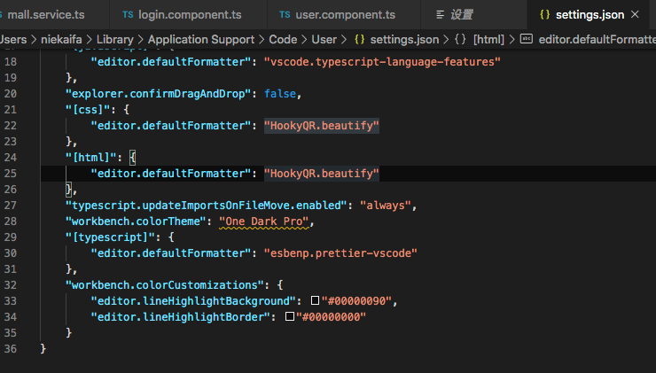

工欲善其事，必先利其器
前言：写这篇博客，是因为我的webStorm账号到期了，登录别人的账号发现主题和快捷都不是我习惯的了，还有一个重要原因是Jetbrains账号小贵。贫穷让我另寻出路，所以我准备用VS Code，这些将是以Max OS 的快捷键，帮助我更快速的写代码。
VS Code介绍
VS Code 的全称是 Visual Studio Code，是一款开源的、免费的、跨平台的、高性能的、轻量级的代码编辑器。它在性能、语言支持、开源社区方面，都做的很不错。
编辑器 与 IDE
IDE和编辑器是有区别的：
IDE：对代码会有较好的智能提示，同时侧重于工程项目，对项目的开发、调试工作有较好的图像化界面的支持，因此比较笨重。比如 Eclipse 的定位就是 IDE。
编辑器：要相对轻量许多，侧重于文本的编辑。比如 Sublime Text 的定位就是编辑器。再比如 Windows 系统自带的「记事本」就是最简单的编辑器。
需要注意的是，VS Code 的定位是编辑器，而非IDE。但 VS Code 又比一般的编辑器的功能要丰富许多。
快捷键列表： VS Code 左下角的齿轮按钮 -> 键盘快捷方式
VS Code快捷键
光标
| Mac快捷键 | 作用 |
|---|---|
| Ctrl + F | 光标前进一个字符，相当于右键（F = Forward） |
| Ctrl + B | 光标后退一个字符，相当于左键（B = Backward） |
| Ctrl + P | 上移一行，相当于上键（P = Previous） |
| Ctrl + N | 下移一行，相当于下键（N = Next） |
| Ctrl + A | 移动到一行的开头（A = Ahead） |
| Ctrl + E | 移动到一行的结尾（E = End） |
| 按住 option | 多光标使用 |
鼠标操作
- 在当前行的位置，鼠标三击，可以选中当前行。
- 用鼠标单击文件的行号，可以选中当前行。
- 在某个行号的位置，上下移动鼠标，可以选中多行。
删除操作
| Mac快捷键 | 作用 |
|---|---|
| option + Backspace | 删除光标之前的一个单词 |
| Cmd + delete | 删除光标之前的整行内容 |
| Cmd + shift + K | 删除整行 |
编辑操作
| Mac快捷键 | 作用 |
|---|---|
| Cmd + Enter | 在当前行下面新增一行，然后跳至该行 |
| Option + P | 将代码向上移动 |
| Option + N | 将代码向下移动 |
| Cmd + D | 将代码向下复制 |
JS语音相关
| Mac快捷键 | 作用 |
|---|---|
| Cmd + / | 添加单行注释 |
| Option + Shift + F | 代码格式化 |
| Ctrl + J | 将多行代码合并为一行 |
| Cmd + U | 将光标的移动回退到上一个位置 |
跳转操作
| Mac快捷键 | 作用 |
|---|---|
| Cmd + P | 在当前的项目工程里，全局搜索文件 很常用 |
| Ctrl + Tab | 在已经打开的文件之间进行跳转 |
| Ctrl + G | 跳转到指定行 |
| Cmd + Shift + O | 在当前文件的各种方法之间进行跳转 |
搜索
| Mac快捷键 | 作用 |
|---|---|
| Cmd + F | 在当前文件中搜索，光标在搜索框里 |
| Cmd + G | 在当前文件中搜索，光标仍停留在编辑器里 |
| Ctrl + G | 跳转到指定行 |
| Cmd + Shift + F | 全局搜索 |
工作区快捷键
| Mac快捷键 | 作用 |
|---|---|
| Cmd + +/- | 将工作区放大/缩小（包括代码字体、左侧导航栏） |
| Cmd + B | 显示/隐藏侧边栏 |
| Cmd + \ | 创建多个编辑器 |
| Cmd + Shift + 、（中文） | 对象/标签开始跳到结束 |
| Cmd + Option + 左右方向键 | 在已经打开的文件之间进行切换 |
| Cmd + J | 显示/隐藏控制台 |
| Ctrl + ` | 打开自带终端 |
| Ctrl + Tab | 在已经打开的文件之间进行跳转 |
命令面板
Mac用户按住快捷键 Cmd+Shift+P
字体设置
在命令面板输入“字体”，可以进行字体的设置
快捷键设置
在命令面板输入“快捷键”，就可以进入快捷键的设置。
大小写转换
选中文本后，在命令面板中输入transfrom，就可以修改文本的大小写了。
使用命令行启动 VS Code
（1）输入快捷键「Cmd + Shift + P 」，选择install code command：
（2）使用命令行：
IDE：code命令：启动 VS Code 软件
编辑器：code pathName/fileName命令：通过 VS Code 软件打开指定目录/指定文件。
VS Code 的常见设置项
VS Code 设置为中文语言
Mac用户按住快捷键 Cmd+Shift+P （Windows用户按住快捷键Ctrl+Shift+P），打开命令面板。
在命令面板中，输入Configure Display Language，选择Install additional languages，然后安装插件Chinese (Simplified) Language Pack for Visual Studio Code即可。
或者，我们可以直接安装插件Chinese (Simplified) Language Pack for Visual Studio Code，是一样的。
安装完成后，重启VS Code。
文件路径面包屑（Breadcrumb）
打开 VS Code 的设置项，选择「用户设置 -> 工作台 -> 导航路径」
上图中，将红框部分打钩即可。
设置成功后，我们就可以查看到当前文件的「层级结构」，非常方便。
是否显示代码的行号
VS Code 默认显示代码的行号。你可以在设置项里搜索 editor.lineNumbers修改设置
右侧是否显示代码的缩略图
VS Code 会在代码的右侧，默认显示缩略图。你可以在设置项里搜索 editor.minimap进行设置
将当前行代码高亮显示（更改光标所在行的背景色）
当我们把光标放在某一行时，这一行的背景色并没有发生变化。如果想高亮显示当前行的代码，需要设置两步：
（1）在设置项里搜索editor.renderLineHighlight，将选项值设置为all或者line。
（2）在设置项里增加如下内容：1
2
3
4"workbench.colorCustomizations": {
"editor.lineHighlightBackground": "#00000090",
"editor.lineHighlightBorder": "#00000000"
}

复制代码上面两行代码的意思是，修改光标所在行的背景色（背景色设置为全黑，透明度90%），修改光标所在行的边框色。
改完代码后立即自动保存
方式一：
改完代码后，默认不会自动保存。你可以在设置项里搜索files.autoSave
我们将配置项修改为onFocusChange之后，那么，当光标离开该文件后，这个文件就会自动保存了。非常方便。
方式二：
当然，你也可以直接在菜单栏选择「文件-自动保存」。勾选年后，当你写完代码后，文件会立即实时保存。
保存代码后，是否立即格式化
保存代码后，默认不会立即进行代码的格式化。你可以在设置项里搜索editor.formatOnSave查看该配置项：
VS Code 设置-高级进阶
文件对比
VS Code 默认支持对比两个文件的内容。选中两个文件，然后右键选择「将已选项进行比较」即可
VS Code自带的对比功能并不够强大，我们可以安装插件compareit，进行更丰富的对比。比如说，安装完插件compareit之后，我们可以将「当前文件」与「剪切板」里的内容进行对比：
创建多层子文件夹
我们可以在新建文件夹的时候，如果直接输入aa/bb/cc
markdown语法支持
VS Code自带 markdown 语法高亮，写完 md 文件之后，你可以点击右上角的按钮进行预览，如下图所示：
Emmet in VS Code
Emmet可以极大的提高 html 和 css 的编写效率，它提供了一种非常简练的语法规则。
举个例子，我们在编辑器中输入缩写代码：ul>li*6 ，然后按下 Tab 键，即可得到如下代码片段：
1 | <ul> |
VS Code 插件推荐
GitLens
我强烈建议你安装插件GitLens，它是 VS Code 中我最推荐的一个插件，简直是Git神器，码农必备。如果你不知道，那真是out了。
GitLens 在 Git 管理上有很多强大的功能，比如：
将光标放置在代码的当前行，可以看到这样代码的提交者是谁，以及提交时间。这一点，是 GitLens 最便捷的功能。
查看某个 commit 的代码改动记录
查看不同的分支
可以将两个 commit 进行代码对比
甚至可以将两个 branch 分支进行整体的代码对比。这一点，简直是 GitLens 最强大的功能。当我们在不同分支review代码的时候，就可以用到这一招。
Bracket Pair Colorizer 2：突出显示成对的括号【荐】
Bracket Pair Colorizer 2插件：以不同颜色显示成对的括号，并用连线标注括号范围。
另外，还有个Rainbow Brackets插件，也可以突出显示成对的括号。
sftp：文件传输
如果你需要将本地文件通过 ftp 的形式上传到局域网的服务器，可以安装sftp这个插件，很好用。在公司会经常用到。
步骤如下：
（1）安装插件sftp。
（2）配置 sftp.json文件。 插件安装完成后，输入快捷键「cmd+shift+P」弹出命令面板，然后输入sftp:config，回车，当前工程的.vscode文件夹下就会自动生成一个sftp.json文件，我们需要在这个文件里配置的内容可以是：
host：服务器的IP地址
username：工作站自己的用户名
privateKeyPath：存放在本地的已配置好的用于登录工作站的密钥文件（也可以是ppk文件）
remotePath：工作站上与本地工程同步的文件夹路径，需要和本地工程文件根目录同名，且在使用sftp上传文件之前，要手动在工作站上mkdir生成这个根目录
ignore：指定在使用sftp: sync to remote的时候忽略的文件及文件夹，注意每一行后面有逗号，最后一行没有逗号
举例如下：(注意，其中的注释需要去掉)
{
“host”: “192.168.xxx.xxx”, //服务器ip
“port”: 22, //端口，sftp模式是22
“username”: “”, //用户名
“password”: “”, //密码
“protocol”: “sftp”, //模式
“agent”: null,
“privateKeyPath”: null,
“passphrase”: null,
“passive”: false,
“interactiveAuth”: false,
“remotePath”: “/root/node/build/“, //服务器上的文件地址
“context”: “./server/build”, //本地的文件地址
"uploadOnSave": true, //监听保存并上传
"syncMode": "update",
"watcher": { //监听外部文件
"files": false, //外部文件的绝对路径
"autoUpload": false,
"autoDelete": false
},
"ignore": [ //忽略项
"**/.vscode/**",
"**/.git/**",
"**/.DS_Store"
]
}
复制代码（3）在 VS Code的当前文件里，选择「右键 -> upload」，就可以将本地的代码上传到 指定的 ftp 服务器上（也就是在上方 host 中配置的服务器ip）。
我们还可以选择「右键 -> Diff with Remote」，就可以将本地的代码和 ftp 服务器上的代码做对比。
Project Manager
工作中，我们经常会来回切换多个项目，每次都要找到对应项目的目录再打开，比较麻烦。Project Manager插件可以解决这样的烦恼，它提供了专门的视图来展示你的项目，我们可以把常用的项目保存在这里，需要时一键切换，十分方便。
open in browser
安装open in browser插件后，在 HTML 文件中「右键选择 –> Open in Default Browser」，即可在浏览器中预览网页。
TODO Highlight
写代码过程中，突然发现一个Bug，但是又不想停下来手中的活，以免打断思路，怎么办？按照代码规范，我们一般是在代码中加个TODO注释。比如：（注意，一定要写成大写TODO，而不是小写的todo）
//TODO:这里有个bug，我一会儿再收拾你
复制代码或者：
//FIXME:我也不知道为啥， but it works only that way.
复制代码安装了插件 TODO Highlight之后，按住「Cmd + Shift + P」打开命令面板，输入「Todohighlist」，选择相关的命令，我们就可以看到一个 todoList 的清单。
Code Time
Code Time插件：记录编程时间，统计代码行数。摸鱼必备。
安装该插件后，VS Code 底部的状态栏右下角可以看到时间统计。点击那个位置之后，选择「Code Time Dashboard」，即可查看统计结果。
Settings Sync
多台设备之间，同步 VS Code 配置。通过登录 GitHub 账号来使用这个同步工具
vscode-syncing
多台设备之间，同步 VS Code 配置